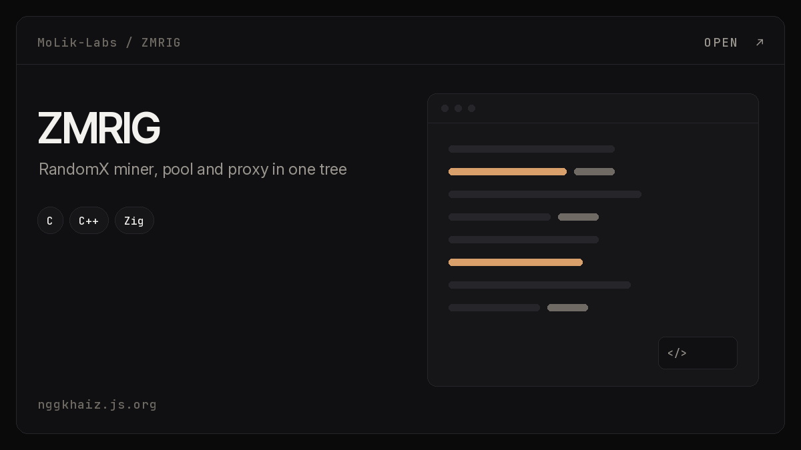
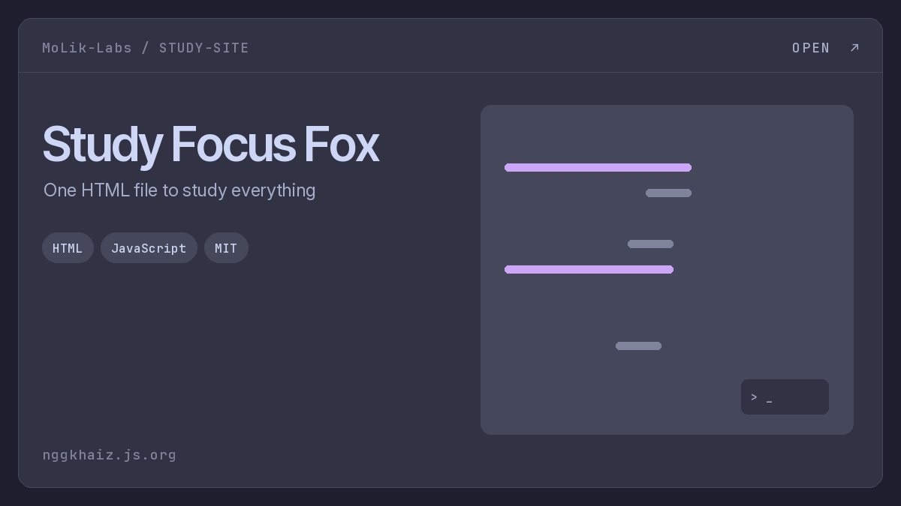

Everything in the open.
Three repositories, each one small enough to read in an afternoon.

ZMRIG A miner, nothing hidden A RandomX miner for Monero — a 3% dev fee you can see and switch off. Q-FOX
A method laboratory
A 3×3 laboratory: one C engine, 13 methods measured on the same scrambles.
Q-FOX
A method laboratory
A 3×3 laboratory: one C engine, 13 methods measured on the same scrambles.

Study Focus Fox A study tool, offline Study Focus Fox — one HTML file to study Physics 9 and everything else.